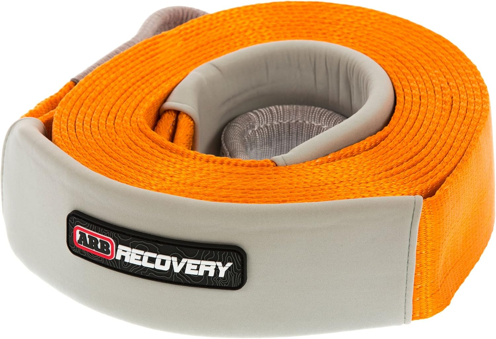
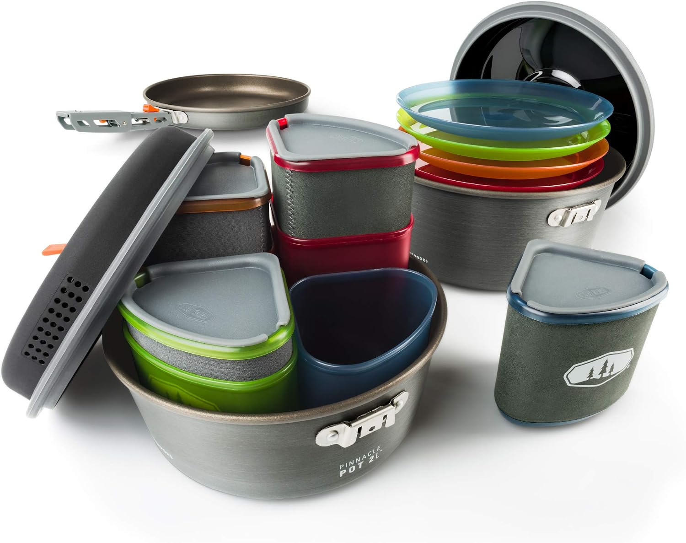
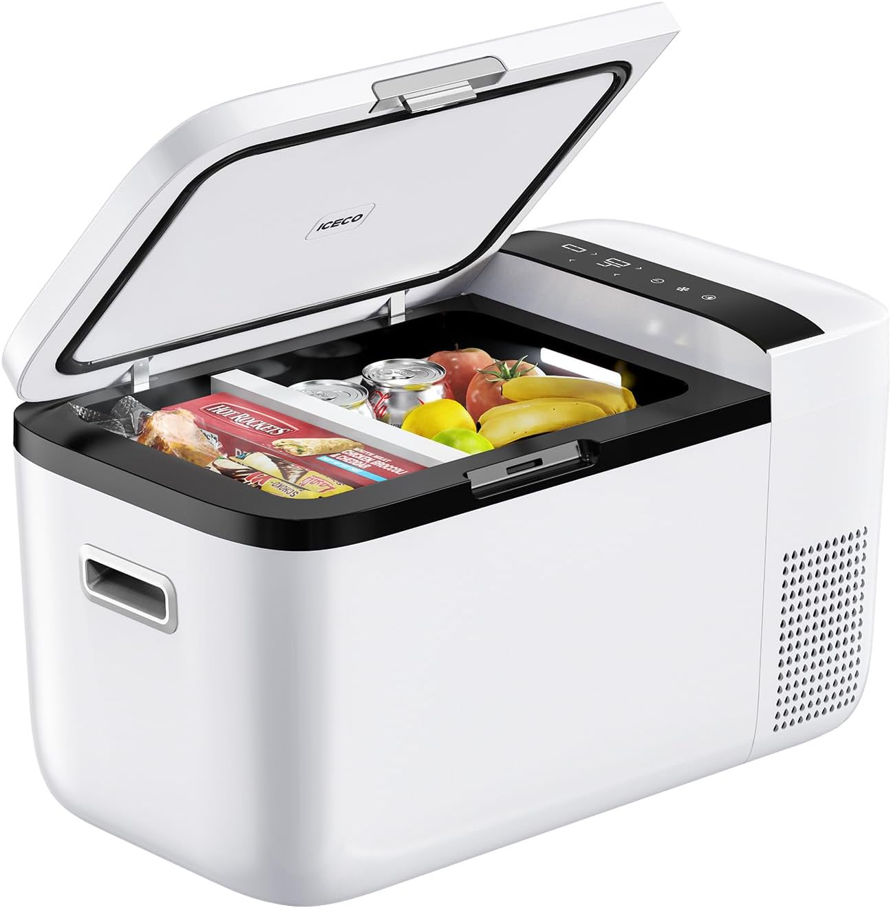
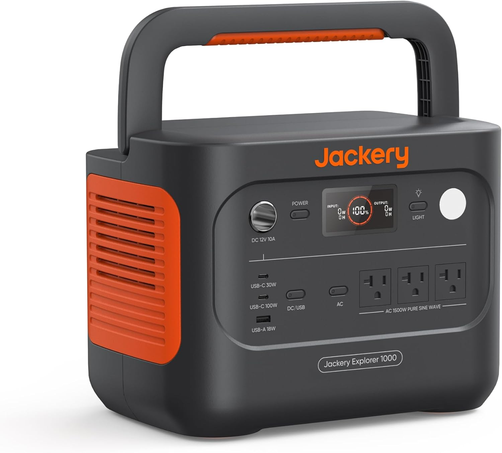
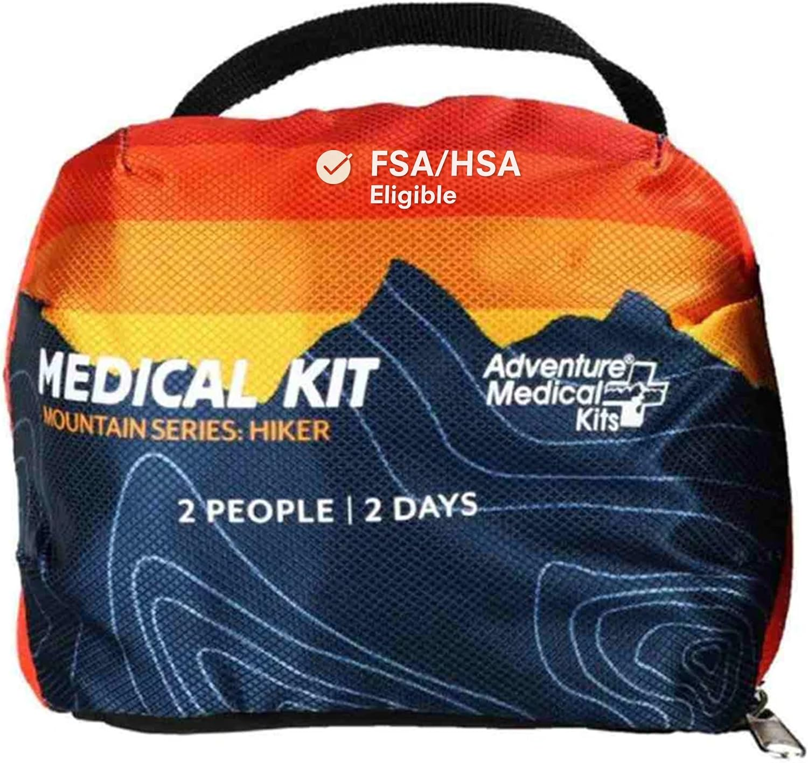
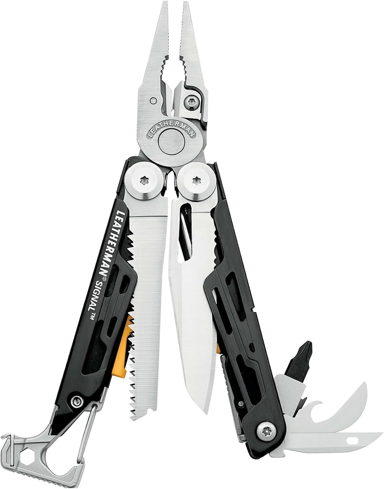

Table of Contents
Compare the Verified Packing-List Products
Each selection maps to a distinct job. Confirm the current listing, instructions, fitment, storage requirements, and safe use before purchase or travel.
| Product | Planning role | Review |
|---|---|---|
| ARB ARB710LB 30-foot Recovery Snatch Strap | Recovery-plan component | See pick |
| GSI Outdoors Pinnacle Camper Cookset | Camp-kitchen organization | See pick |
| ICECO GO20 Dual Zone Portable Refrigerator | Cold-food storage | See pick |
| Jackery Explorer 1000 v2 Portable Power Station | Portable power planning | See pick |
| Adventure Medical Kits Mountain Series Hiker | First-aid layer | See pick |
| Leatherman Signal Multi-Tool | Compact repair support | See pick |
A useful packing list is not a pile of gear. It is an assignment of space, weight, and access to jobs that matter on your route. Recovery equipment should be isolated from sharp tools and packed with compatible hardware. Food and cooking equipment should match the days away and the available power. First-aid and repair items should be reachable without unloading the entire vehicle.
This guide references six products identified in the Trail Built verified pool; their public listings were title-matched and showed active buying controls on September 28, 2026. The descriptions below summarize information contained in those listings and reflect research of listing data rather than evaluation through product operation. Confirm current specifications, fitment, and manufacturer instructions with the seller or manufacturer before purchase.
Build the system before the list
Begin with the route, the vehicle, and the people traveling. Remote terrain, weather, water access, trip length, and cargo limits change what deserves a dedicated space. Establish the recovery plan before adding a strap. Decide where food will live before choosing a refrigerator. Know the expected electrical loads before adding a portable power station.
Then assign each category a home: recovery gear in an accessible but protected location; cooking and food storage near the camp setup; first aid reachable from outside or inside the vehicle; and repair tools secured so they cannot damage other cargo. Heavy objects should be restrained and packed low, with doors and emergency access kept clear.
The six verified building blocks
1. ARB ARB710LB 30-foot Recovery Snatch Strap — recovery-plan component

ARB ARB710LB 30-foot Recovery Snatch Strap
The active listing identifies a 3-1/4-inch by 30-foot ARB recovery snatch strap with reinforced eyes and protective sleeves. It belongs only in a recovery plan with compatible rated points, hardware, and trained use.
What the listing supports
- A 30-foot ARB recovery snatch strap format.
- Reinforced eyes and protective sleeves in the title-matched listing.
- A recovery component to inspect and match to a vehicle-specific plan.
2. GSI Outdoors Pinnacle Camper Cookset — compact camp-kitchen layer

GSI Outdoors Pinnacle Camper Cookset
The active listing identifies the GSI Camper Pinnacle cookset. A nested cookset can simplify a camp-kitchen zone, but confirm the included pieces and plan cookware around the group size and meals you actually intend to prepare.
What the listing supports
- A GSI Camper Pinnacle cookset listing.
- A compact cookware category for organizing meals and washing-up supplies.
- A kit whose current included components should be confirmed before packing.
3. ICECO GO20 Dual Zone Portable Refrigerator — cold-food storage

ICECO GO20 Dual Zone Portable Refrigerator
The active listing identifies a 21-quart/20-liter dual-zone ICECO GO20 portable refrigerator with AC and DC power options. Match cold-storage capacity and electrical demand to the trip plan rather than assuming a small refrigerator solves every food-storage need.
What the listing supports
- A 21-quart/20-liter portable refrigerator format.
- A dual-zone design and stated AC/DC operation in the active listing.
- A storage decision that should be paired with ventilation, restraint, and power planning.
4. Jackery Explorer 1000 v2 Portable Power Station — portable power planning

Jackery Explorer 1000 v2 Portable Power Station
The active listing identifies a Jackery Explorer 1000 v2 with stated 1070Wh capacity and 1500W output. Calculate the loads, charging method, weight, and reserve you need; do not treat the stated capacity as a replacement for an electrical plan.
What the listing supports
- Stated 1070Wh capacity and 1500W output in the title-matched listing.
- A portable power-station category for planned camp and vehicle loads.
- A power source that still needs safe charging, ventilation, and load management.
5. Adventure Medical Kits Mountain Series Hiker — first-aid layer

Adventure Medical Kits Mountain Series Hiker
The active listing identifies an Adventure Medical Kits Mountain Series Hiker medical kit. Keep first aid accessible, protect it from moisture and cargo shifts, and tailor the contents, training, and emergency plan to the trip and travelers.
What the listing supports
- An Adventure Medical Kits Mountain Series Hiker medical-kit listing.
- A dedicated first-aid category that should remain quickly accessible.
- A kit that should be reviewed for trip-specific needs before departure.
6. Leatherman Signal Multi-Tool — compact repair support

Leatherman Signal Multi-Tool
The active listing identifies a Leatherman Signal with 19 tools for camping and survival and a nylon holster. It is a compact repair-support category, not a replacement for dedicated service tools or proper repair procedures.
What the listing supports
- A Leatherman Signal multi-tool with 19 tools in the title-matched listing.
- A listed nylon holster for storage.
- A compact tool category to secure separately from loose cargo and recovery webbing.
A practical packing order
- Set the safety baseline: Place first aid and emergency communication where they are reachable before unloading cargo.
- Build the recovery zone: Keep recovery components clean, labeled, protected from sharp edges, and compatible with the vehicle’s rated recovery plan.
- Plan food and power together: Estimate the food duration, refrigerator location, electrical demand, charging path, and ventilation before filling storage space.
- Secure repair support: Store the multi-tool and vehicle-specific service equipment so they cannot become loose projectiles or damage other gear.
- Do a final access check: Confirm doors open, seats fold as needed, tie-downs are secure, and the heaviest equipment is low and restrained.
Departure safety check
Before every trip, inspect recovery webbing and hardware, verify that first-aid items are stocked and accessible, review the expected power loads, and confirm every cargo tie-down. Conditions change: a day trip in dry weather may need a different loadout than a multi-day route with water crossings, cold nights, or remote travel. The goal is an organized system that helps you find the right tool without overloading the vehicle or creating a new hazard.
Overlanding packing list FAQ
How do I avoid overpacking an overland vehicle?
Assign each item a job, a storage location, and a reason it belongs on the planned route. Remove duplicates and heavy equipment that does not solve a realistic need. Recheck payload, axle loading, tire pressure, visibility, and cargo restraint before travel.
Should I pack recovery gear with other tools?
Keep recovery webbing and associated hardware protected from sharp edges, contamination, and loose metal tools. Pack each component so it can be inspected and accessed without disturbing emergency or first-aid equipment.
What is the first item to pack for a camp setup?
Pack the equipment that supports safety and access first, then organize food, cooking, and comfort equipment around the actual length of the trip. Confirm that cold storage and power needs can be supported by the vehicle and charging plan.